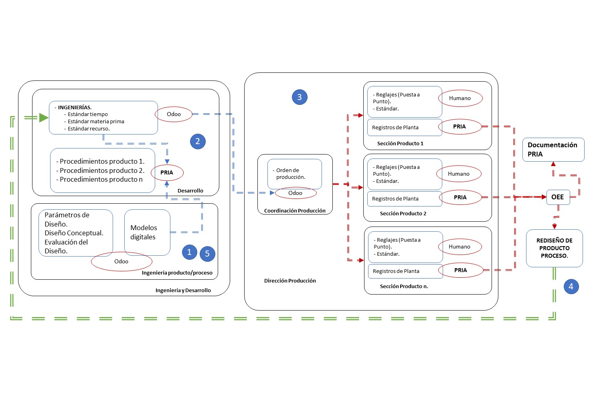
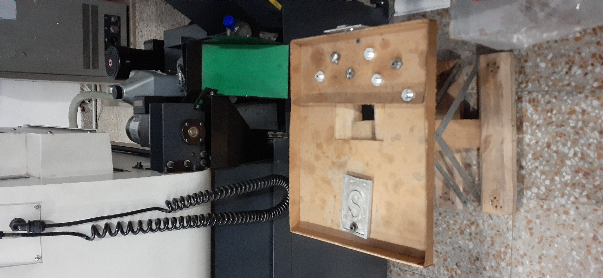
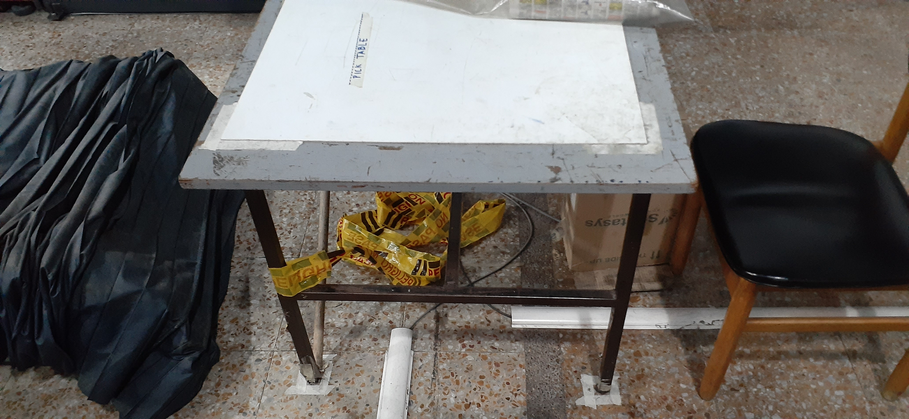
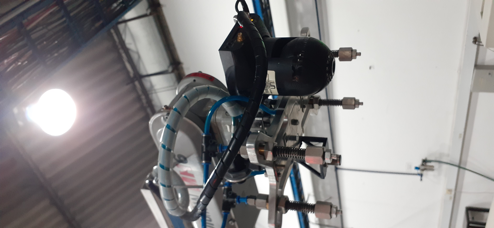
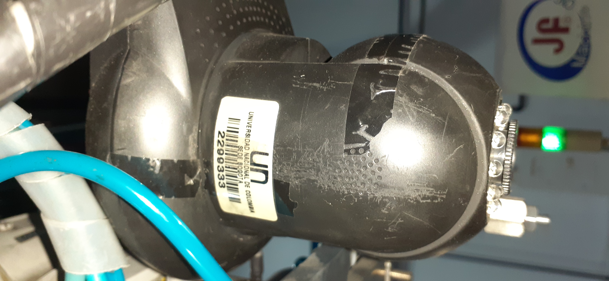

PRIA & Odoo¶
La prueba consiste en un ciclo de operacion en donde se utilizan dos máquinas: Torno & Motoman.
Se contempla un escenario industrial en donde el diseño del proceso es acompañado por una plataforma de apoyo en PLM (Odoo) en donde se crean usuarios que son responsables de interactuar con los archivos y con los demás participantes. El objetivo final es poder comparar los tiempos proyectados con los reales. Finalmente se puede calcular algún indicador de productividad, en este caso el OEE.
La ECO ordena entonces el cambio de rama para la ejecución de la rutina mejorada:
git pull
git checkout pilot_2019_2
Reglaje de máquinas¶
Para el desarrollo exitoso de la prueba se deben consultar los requerimientos establecidos dentro de los documentos de Odoo, así como la conexión de todas las máquinas con la base de datos.
Correcta posición de la mesa:
La cámara ubicada en la muñeca del robot Motoman es la que se muestra a continuación:
El correcto posicionamiento de la cámara se garantiza cuando las cintas se encuentran alineadas, esta alineación se puede corregir de forma manual.
(Source code, png, hires.png, pdf)
{kind=link}
{kind=link}
(Source code, png, hires.png, pdf)
{kind=link}
{kind=link}
Productividad¶
Se calcula a partir de la relación del tiempo real (\(T_r\)) y el tiempo estimado (\(T_s\)).
\(P = \frac{T_s}{T_r}\)
Con un tiempo estimado de 180 segundos los resultados son los siguientes:
\(P_{version 1} = 0.983\)
\(P_{version 2} = 0.658\)
(Source code, png, hires.png, pdf)
{kind=link}
{kind=link}